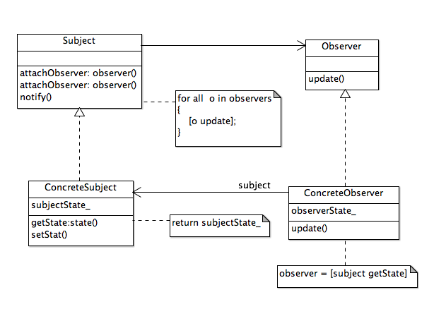
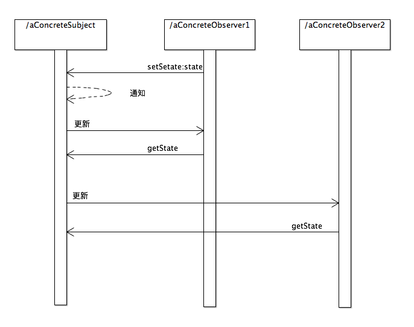
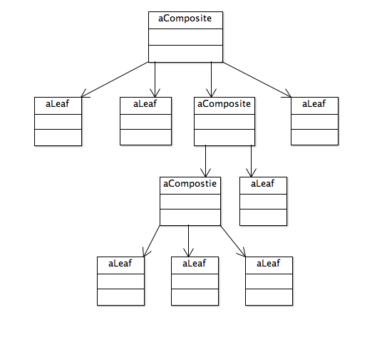
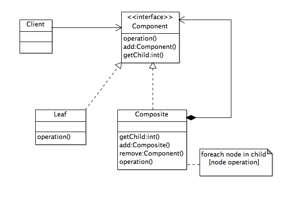
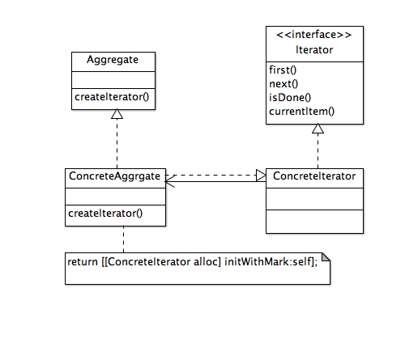

《iOS设计模式解析》笔记3：中介者模式、观察者模式、组合模式、迭代器模式
中介者模式
用一个对象来封装一系列对象的交互方式。中介者使各对象不需要显式地相互引用，从而使其耦合松散，而且可以独立地改变它们之间的交互。
使用情景
- 对象间的交互虽定义明确然而非常复杂，导致一组对象彼此相互依赖而且难以理解
- 因为对象引用了许多其他对象并与通讯，导致对象难以复用
- 想要定制一个分布在多个类中的逻辑或行为，又不想生成太多子类
中介者模式以中介者内部的复杂性代替交互的复杂性。因为中介者封装与合并了colleague(同事)的各种协作逻辑，自身可能变得比它们任何一个都复杂。这会让中介者本身成为无所不知的庞然大物，并且难以维护。(如果在实际应用程序中if-else语句块变成巨无霸，就应该采用策略模式)
虽然对于处理应用程序的行为分散于不同对象并且对象互相依存的情况，中介者模式非常有用，但是应当注意避免让中介者类过于庞大而难以维护。如果已经这样了，可以考虑使用另一种设计模式把它分解。要创造性地混合和组合各种设计模式解决同一个问题。每个设计模式就像一个乐高积木块。整个应用程序可能要使用彼此配合的各种“积木块”来建造。

观察者模式
定义对象间的一种一对多的依赖关系，当一个对象的状态发生改变时，所有依赖于它的对象都得到通知并被自动更新。
使用情景
- 有两种抽象类型相互依赖。将它们封装在各自的对象中，就可以对它们单独进行改变和复用
- 对一个对象的改变需要同时改变其他对象，而不知道具体有多少对象有待改变
- 一个对象必须通知其他对象，而它又不需要知道其他对象是什么
通知与键-值观察之间的主要差别
| 通知 | 键-值观察 |
|---|---|
| 一个中心对象为所有观察者提供变更通知 | 被观察的对象直接向观察者发送通知 |
| 主要从广义上关注程序事件 | 绑定于特定对象属性的值 |


组合模式
将对象组合成树形结构以表示“部分-整体”的层次结构。组合使得用户对单个对象和组合对象的使用具有一致性
使用情景
- 想获得对象抽象的树形表示(部分-整体层次结构)
- 想让客户端统一处理组合结构中的所有对象
在Cocoa Touch框架中，UIView被组成一个组合结构。每个UIView的实例可以包含UIView的其它实例，形成统一的树形结构。让客户端对单个UIView对象和UIView的组合统一对待。
窗口中的UIView在内部形成视图的树形结构。层次结构的根部是一个UIWindow对象和它的内容视图。添加进来的其它UIView成为它的子视图。它们的每一个可以包含其它视图而变成自己的子视图的超视图。UIView对象只能有一个超视图，可以有零到多个子视图。
视图组合结构参与绘图事件处理。当请求超视图为显示进行渲染时，消息会先在超视图被处理，然后传给子视图，消息会传播到遍及整个树的其他子视图。因为它们都是相同的类型--UIView，它们可以被统一处理，而且UIView层次结构的一个分支也可以同样当做一个视图来处理。
统一的视图也作为一个响应链，用于事件处理和动作消息。绘图消息像事件处理消息那样，顺着结构从超视图向子视图传递。Cocoa Touch框架中的响应者链是对责任链模式的实现。
组合模式的主要意图是让树型结构中的每个节点具有相同的接口。这样整个结构可作为一个统一抽象结构使用，而不是暴露其内部表示。对每个节点(叶节点或组合)的任何操作，可以通过协议或者抽象其类中定义的相同接口来进行。
对这个结构新增的操作可以用访问者模式来实现，让访问者“访问”每一个节点进行进一步处理，而不必修改现有的组合结构。
组合结构的内部表示不应该暴露给客户端，因此组合模式总是跟迭代器模式一起使用，以遍历组合对象中的每一个项目。


迭代器模式
提供一种方法顺序访问一个聚合对象中各个元素，而又不暴露该对象的内部表示。
使用情景
- 需要访问组合对象的内容，而又不暴露其内部表示
- 需要通过多种方式遍历组合对象
- 需要提供一个统一的接口，用来遍历各种类型的组合对象
外部迭代器与内部迭代器的区别
| 外部迭代器 | 内部迭代器 |
|---|---|
| 客户端需要知道外部迭代器才能使用，但是它为客户端提供了更多的控制 | 客户端不需要知道任何外部迭代器，而是可以通过集合对象的特殊接口，或者一次访问一个元素，或者向集合中的每个元素发送消息 |
| 客户端创建并维护外部迭代器 | 集合对象本身创建并维护它的外部迭代器 |
| 客户端可以使用不同外部迭代器实现多种类型的遍历 | 集合对象可以在不修改客户端代码的情况下，选择不同的外部迭代器 |
在遍历时修改聚合体对象可能有危险。如果向聚合体添加或从聚合体删除了元素，可能导致对一个元素访问两次或完全漏掉一个元素。简单的方法是对聚合体进行一个深复制，再对副本进行遍历，但是如果创建和存储聚合体的别一个副本可能影响性能，代价就比较大。有很多方法可以实现不受元素插入或删除影响的迭代器。大部分依靠向聚合体注册迭代器。一种实现方法是在插入与删除操作时，聚合体或者调整由它生成的迭代器的内部状态，或者在内部维护信息，以保证正确的遍历。
